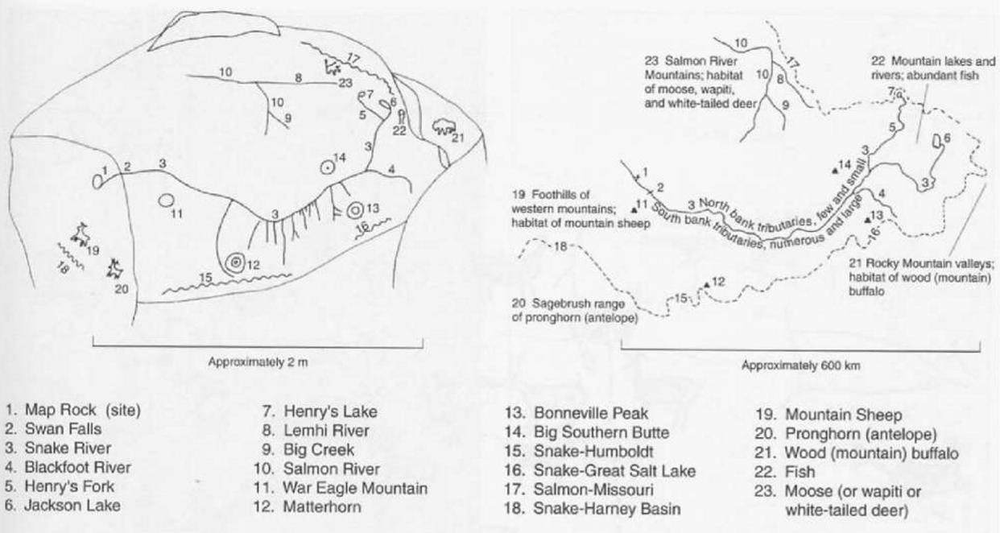
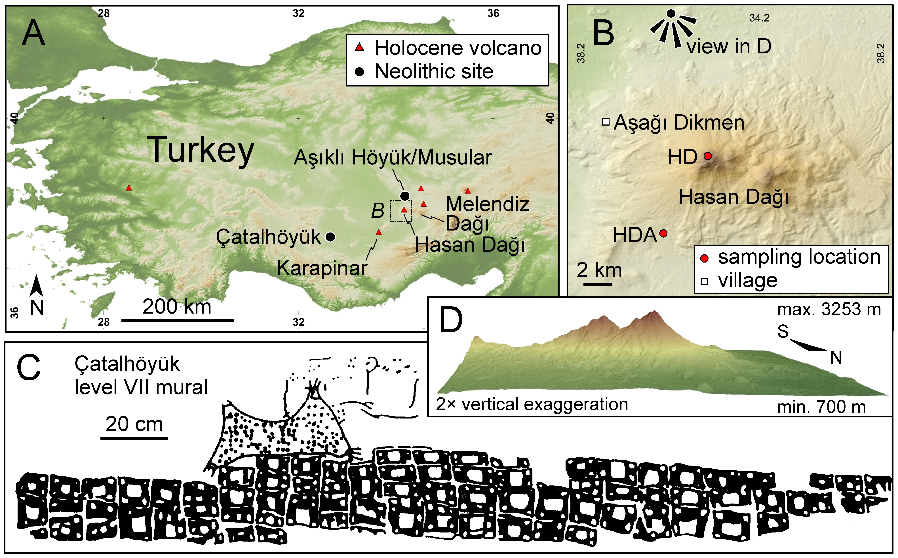

History of GIS
Pre-Historic Maps
Many of the first maps are difficult to recognize as such.
- Rock art, pottery, carving, and etchings
- Movement, gestures, & oral traditions
- Paper and Textile maps appeared later

Pre-Historic Maps
Frequently depicted:
- Landscapes
- Hunting Grounds
- Villages
- Agricultural Plots

Few Surviving Examples
In many cases we must look to more recent examples.

Ojibway birch bark scrolls.

Miꞌkmaq gestural map
Cartography and Navigation
Austronesian expansion started ~5,000 B.P.
- Crossed oceans reading stars, waves, weather, and wildlife
- Charts, songs, and stories to recorded details


Oldest Known Maps
Landscape around Dyje River, Czechia (26,000 B.P.)


Darling River basin, Australia (~20,000 B.P.)
Oldest Known Maps
Map Rock is an engraving of a 600km reach of the Snake River Valley, Idaho (~12,000 B.P.)

First "Urban" Plans
Çatalhöyük Turkey, 8700 B.P.
Bedolina, Italy 4000 B.P.

Paper and Textile Maps
Maps on papyrus paper appeared in Egypt ~3,200 B.P.


Paper and silk maps appeared in China ~2,200 B.P.
Advent of Surveying
As coalesced, methods for the systematic collection of spatial information were developed.
- Objects needed to be drawn to scale
- Mastery of geometry and trigonometry
- Surveys were used to:
- Demarcate agricultural fiels, construct buildings, & plan settlements
Urban Planning
Town plan of Nippur, Babylonia on a clay tablet. Possibly the earliest map drawn to scale 3500 B.P.
- Over small areas, maps could now "accurately" represent:
- Bearings (direction)
- Distances
- Sizes

Surveying Methods
Rope stretching is the earliest technique to come about.
- It was labor intensive and only applicable for small areas
- Used for building monuments and agricultural surveys


Surveying Methods
Line of sight methods allowed for surveying over greater distances and mapping larger areas.


Surveying Methods
Line of sight methods allowed for surveying over greater distances and mapping larger areas.
- Road networks could be constructed
- Distances between settlements could be approximated

The Groma
The Roman Empire employed professional surveyors.
- Built a massive road network and created an Agricultural land registry
- They used the groma
- Precursor of the modern theodolite

The Compass
Lodestones are naturally occurring magnetic minerals.
- Used by the Olmec civilization (3000 B.P.) to orient their cities


The Compass
Separately developed by the Han Dynasty ~2200 B.P.
- First used for navigation in China during the Song Dynasty ~ 1000 B.P.
- Made its way to Europe around 800 B.P.
- Spurred on the "Age of Exploration"

Exploration Spurred Cartographic Advances
Trade and travel expanded conceptualizations of what the world was.
- Greeks built on knowledge of the Egyptians & Mesopotamians

Ptolemy’s Geographia
The first known Atlas (1850 B.P.).
- 8 Volume GIS prototype with an index of place names
- Projected world map accounting for earth's curvature
- Underestimated earths size

Chinese Exploration
Advances in maritime technology, including the compass led to a wave of exploration.
- Culminated in the Ming Dynasty Treasure Voyages
- By 600 B.P., they had mapped most of South & East Asia, East Africa, Indonesia & Australia.
- May have even visited the west coast of North America!

Spread of Information
Chinese and Islamic mariners brought technology westward.
- By 550 BP. Europeans had the compass

Spurred on the "Age of Discovery"
- European perspectives came to dominate the cartographic world

The Mercator Projection
Revolutionized cartography.
- Follow constant bearing and reach any location on earth
- Still used today (e.g. Google Maps)


Mercator Projection
Revolutionized cartography.
- Follow constant bearing and reach any location on earth
- Still used today (e.g. Google Maps)
Mercator Projection
However, the projection is problematic because it severely distorts the true size of some regions.
- We'll discuss more about why this is in the next lecture

Spatial Analysis
As our representation of space became more accurate and precise, humans could navigate more effectively.
- Our ability to make spatial inferences expanded as well
- We'll recreate an example from history using modern methods in lab

Canadian Context
Canada’s first scientific agency, founded in 1842. The GSC mapped resources and promoted expansion.

The government used GSC maps to identify and "claim" valuable territories.

Numbered Treaties
Building on GSC Surveys, the government "negotiated" the numbered treaties.
- The RCMP were created to enforce treaties and displace Indigenous people

Canada Land Inventory
Mapped suitability of lands for: Agriculture, forestry, recreation and wildlife.
- Original maps can be found here
- Led to the creation of the first GIS
- Digital geographic database
- Advances in spatial analysis

Countering Colonialism
The lands that comprise Canada have been inhabited for thousands of years and have histories that stretch back well before the colonial era.
- Many colonial mapping efforts were centered on erasing Indigenous peoples and their histories
- One way they accomplished this was through the use of place names

Ch'ich'iyuy is a Skwxwú7mesh word that translates to "Twins"
Learning Place Names
The Skwxwú7mesh Atlas is a great resource for learning about Skwxwú7mesh Place Names.

The xʷməθkʷəy̓əm nation has put together a great resource for as well!